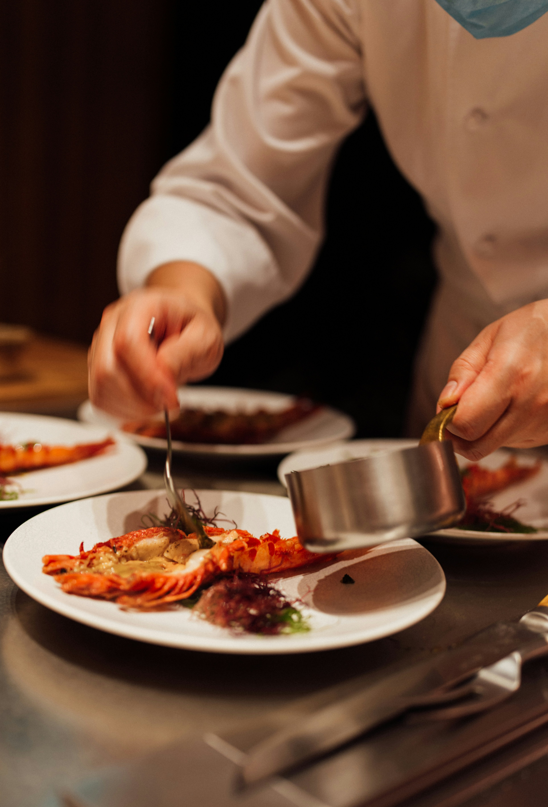

Pizza Margherita
Clásica pizza italiana con tomate, mozzarella y albahaca fresca.
Clásica pizza italiana con tomate, mozzarella y albahaca fresca.

Capas de pasta, carne, salsa bechamel y queso gratinado.

Pasta cremosa con panceta, huevo y queso parmesano.

Arroz cremoso con setas frescas y queso parmesano.

Pan esponjoso con aceite de oliva, romero y sal gruesa.

Pan tostado con tomate, ajo y albahaca fresca.

Postre clásico italiano con café, mascarpone y cacao.

Ñoquis de papa con salsa de albahaca y piñones.

Exploro y comparto los sabores auténticos de Italia. Mi objetivo es llevar un pedacito de Italia a cada plato y a cada lector de este blog.

Es un chef italiano que fusiona tradición y creatividad en su restaurante Osteria Francescana.

Es un chef italiano conocido por su cocina minimalista y refinada en el restaurante Reale.

Es un chef italiano reconocido por su cocina artística y vegetal en el restaurante Piazza Duomo.